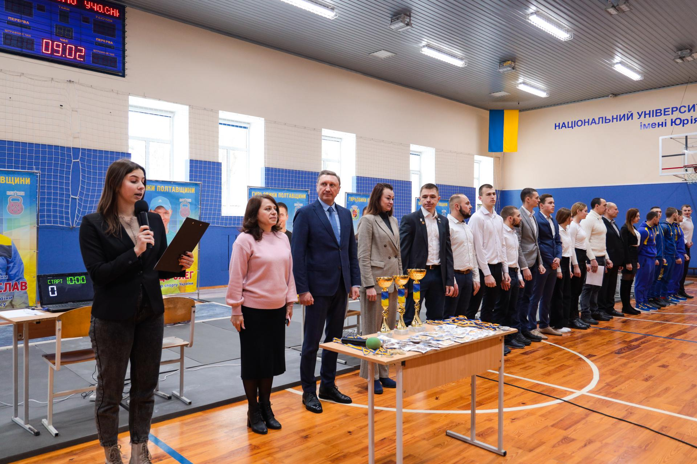

У політехніці відбулися змагання Відкритого чемпіонату Полтавської області з гирьового спорту
На надсучасній спортивній базі Національного університету «Полтавська політехніка імені Юрія Кондратюка» пройшли змагання Відкритого чемпіонату Полтавської області з гирьового спорту. Спортсмени з Полтави, Харкова, Борисполя, Дніпра, Ланнівської, Карлівської, Миргородської, Шишацької, Лубенської, Щербанівської, Терешківської територіальних громад змагалися за перемогу у різних вікових категоріях.
17 лютого в Національному університеті «Полтавська політехніка імені Юрія Кондратюка» відбулось урочисте відкриття Відкритого чемпіонату Полтавської області з гирьового спорту. Змагання провели за підтримки ректора Національного університету «Полтавська політехніка імені Юрія Кондратюка», керівника Української федерації учнівського спорту та Спортивної студентської спілки в Полтавській області Володимира Онищенка, начальниці Управління молоді та спорту Полтавської обласної військової адміністрації Марини Трохименко, депутата Карлівської міської ради Андрія Дуленка та заступника голови Відокремленого підрозділу Всеукраїнської громадської організації «Союз гирьового спорту України» в Полтавській області Олега Коломійця.

Урочисте відкриття Відкритого кубку Полтавської області з гирьового спорту розпочалося з рівняння на Державний Прапор та вшанування хвилиною мовчання співвітчизників, загиблих внаслідок повномасштабної війни на території України. На жаль, нещодавно Федерація гирьового спорту Полтавщини понесла непоправну втрату – у бою під містом Слов’янськом, що на Донеччині, рятуючи двох поранених побратимів, трагічно загинув видатний спортсмен Віктор Котелевець.
Слова щирої вдячності адресуємо Збройним Силам України за надану нам можливість жити більш-менш мирним життям, вдосконалюючи власну спортивну майстерність та займаючись улюбленою справою. Вітаю усіх, причетних до високого служіння спорту, учасників, тренерів, бажаю нових вагомих спортивних та особистісних здобутків, успішних виступів та яскравих перемог! Стаючи кращими у обраному спорті, ви робите власний посильний внесок у нашу спільну Перемогу! Слава Україні!», – привітав спортсменів ректор Національного університету «Полтавська політехніка імені Юрія Кондратюка», керівник Української федерації учнівського спорту в Полтавській області та Спортивної студентської спілки в Полтавській області Володимир Онищенко.